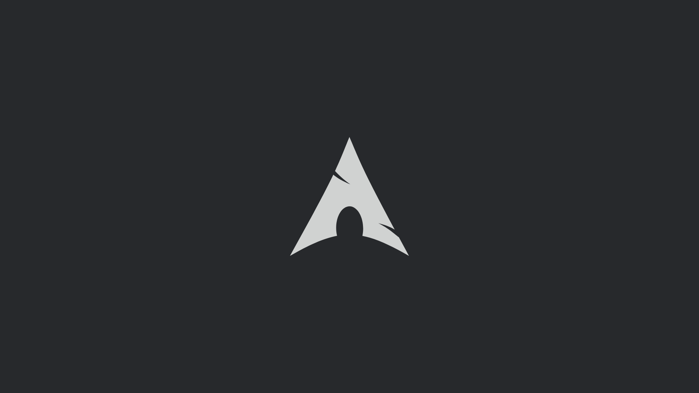

Sistemas Operativos y Herramientas
La diversidad es una de las mayores fortalezas del ecosistema Linux. Estas distribuciones representan diferentes filosofías y enfoques dentro del mundo del software libre.


